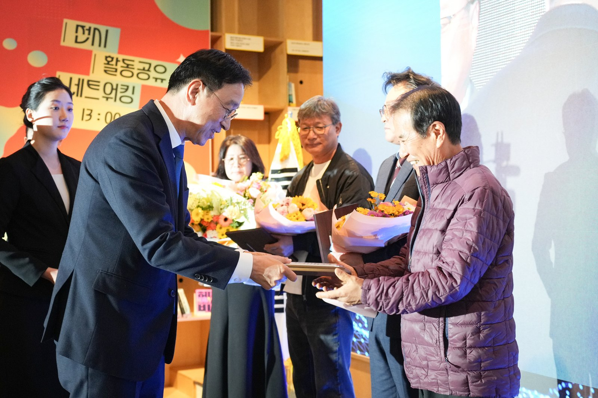
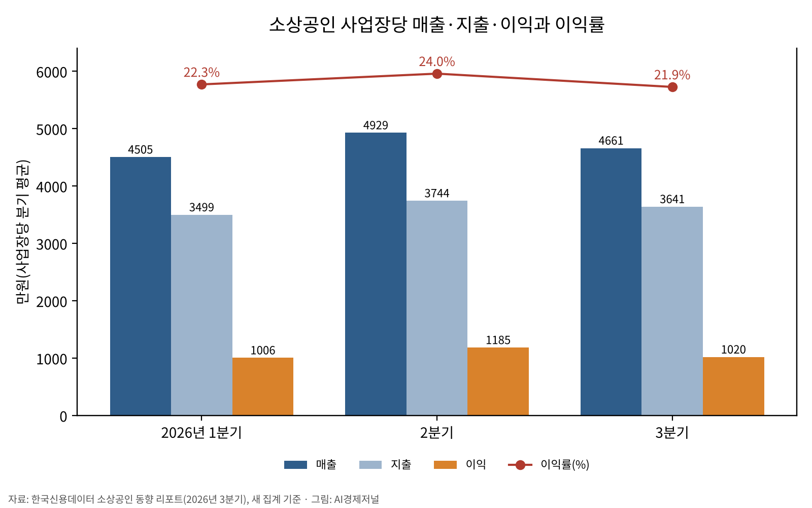
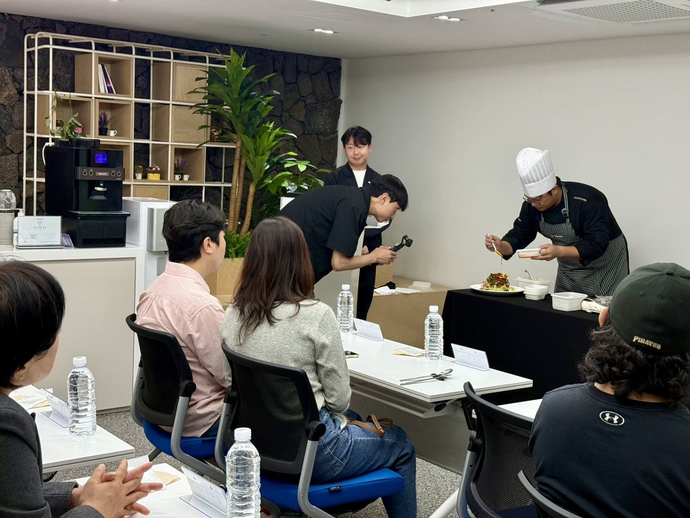
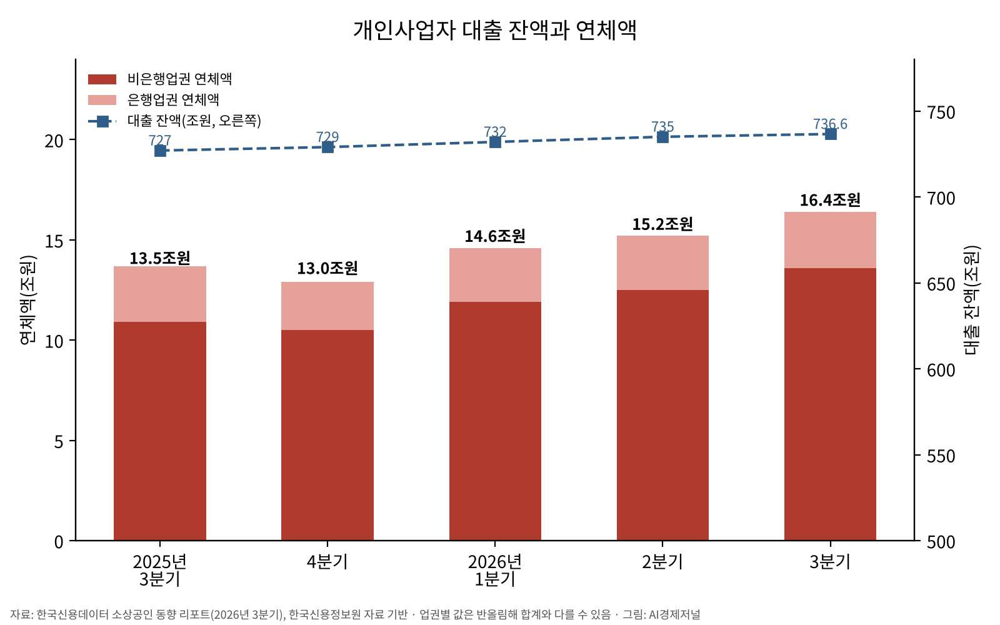
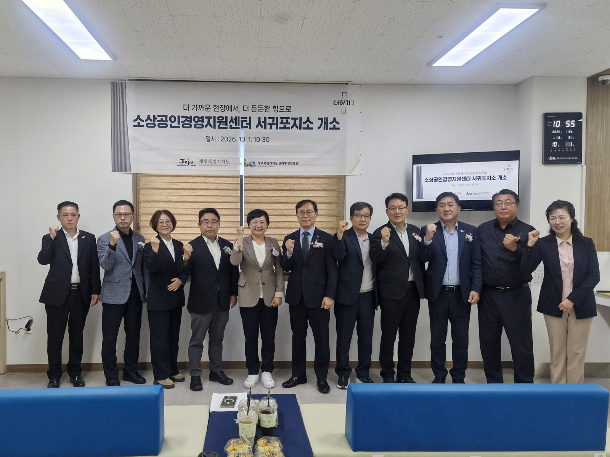

[소상공인] 매출 다섯 분기 만에 전년 대비 감소, 대출 연체 16조4000억원
사업장당 분기 이익 1020만원, 8.3% 감소
연체액 1년 새 2조9000억원 증가
대출 보유 폐업 사업장 50만5000곳
AI경제저널=김갑봉 기자 | 올해 3분기 소상공인 사업장당 평균 매출이 4661만원으로 1년 전보다 4.36% 줄었다. 평균 이익은 1020만원으로 8.30% 줄었다. 개인사업자 대출 연체액은 16조4000억원으로 1년 전보다 2조9000억원 많다. 대출 잔액이 전 분기보다 0.1% 느는 사이 연체액은 7.3% 늘었다.
한국신용데이터는 10일 전국 소상공인의 2026년 3분기(7~9월) 경영 현황을 담은 「한국신용데이터 소상공인 동향 리포트(2026년 3분기)」를 내놨다. 경영 현황은 경영관리 서비스 캐시노트를 쓰는 사업장에서 표본을 뽑아 집계했다. 금융 현황은 한국신용정보원 자료를 바탕으로 개인사업자 신용평가사 한국평가정보와 함께 분석했다.
매출·지출·이익은 사업장당 분기(석 달) 평균이다. 이익은 매출에서 세금계산서·현금영수증·카드 매입 등 증빙된 지출을 뺀 값이다. 증빙이 없는 지출은 집계에 들어가지 않는다. 리포트는 이 지표가 전체 시장을 대표하기보다 캐시노트 사용 사업장의 경영 흐름을 빠르게 파악하려는 지표라며 해석에 유의하라고 적었다.


상반기는 이익률만, 3분기는 매출까지 감소
전년 동기 대비 매출은 1분기 1.01%, 2분기 3.96% 늘었다. 3분기에는 4.36% 감소로 돌아섰다. 전년 대비 매출이 줄어든 것은 다섯 분기 만이다.
평균 지출은 3641만원으로 1년 전보다 3.20% 줄었다. 지출보다 매출이 더 많이 줄어 이익률은 21.9%로 0.94%포인트 낮아졌다. 연구소가 리포트의 감소율로 거꾸로 계산하면 1년 전 평균 이익은 약 1112만원이다. 1년 새 사업장당 분기 이익이 92만원가량 줄었다.
이익률은 1분기 1.69%포인트, 2분기 0.53%포인트에 이어 세 분기 연속 1년 전보다 낮았다. 상반기에는 매출이 늘면서 이익률이 떨어졌고, 3분기에는 매출마저 줄었다. 직전 분기와 견주면 3분기 매출은 5.44%, 이익은 13.94% 줄었고 이익률은 2.16%포인트 낮아졌다.
민생회복 소비쿠폰이 지급된 지난해 3분기에는 매출이 직전 분기보다 2.79% 늘었다. 한국신용데이터는 이 때문에 올해 전년 대비 감소 폭이 상대적으로 크게 나타난 측면도 있다고 밝혔다.
집계 기준 바뀐 리포트, 옛 기준으로도 감소
한국신용데이터는 이번 리포트부터 집계 기준을 셋 바꿨다. 소상공인 판정에 업종별 연 매출액 상한을 더했다. 업종 가중치는 2022년 실태조사에서 2024년 기준 소상공인 실태조사로 바꿨다. 카드 결제가 드문 부동산업은 집계에서 뺐다.
과거 분기도 새 기준으로 다시 계산했다. 2분기 사업장당 평균 매출은 옛 기준 4711만원, 새 기준 4929만원이다. 한국신용데이터는 이전 리포트·보도자료 수치와 직접 비교할 때 유의하라고 밝혔다. 또 옛 기준으로 계산해도 3분기 매출과 이익은 1년 전보다 줄었고, 새 기준에서 감소 폭이 더 컸다고 밝혔다.
외식·유통 세부 업종 모두 감소

외식업은 세부 업종 모두 매출이 1년 전보다 줄었다. 패스트푸드(5.7%), 분식(5.1%), 일식(5.0%), 한식(4.6%)의 감소 폭이 컸다. 유통업도 슈퍼마켓·편의점 등 종합유통이 3.8%, 가구점·문구점·안경점 등 전문유통이 4.1% 줄었다.
서비스업에서는 노래방·PC방·스포츠시설 등 예술·스포츠와 여가 관련 서비스업이 11.2% 줄어 감소 폭이 가장 컸다. 숙박과 여행서비스업은 4.2% 줄었다. 매출이 늘어난 세부 업종은 건강·의료 서비스업(4.0%)과 운수 서비스업(2.1%) 두 곳뿐이다. 한국신용데이터는 외식·여가 지출은 줄이고 필수 지출은 유지하는 소비 흐름이 이어지고 있다고 분석했다.
잔액은 제자리, 연체액은 세 분기 연속 증가
3분기 개인사업자 대출 잔액은 736조6000억원으로 전 분기보다 0.1% 늘었다. 은행업권이 434조6000억원(59.0%), 비은행업권이 302조원(41.0%)이다. 비은행업권 가운데 상호금융이 237조6000억원으로 가장 많다. 은행업권 잔액은 0.2% 늘었다. 직전 분기 1.1% 늘었던 비은행업권 잔액은 0.1% 줄었다.
연체액은 16조4000억원으로 전 분기보다 7.3% 늘었다. 1분기 12.6%, 2분기 4.3%에 이어 세 분기 연속 증가다. 비은행업권 연체액이 13조6000억원으로 8.1% 늘었다. 대출 잔액 대비 연체액 비중은 저축은행 6.0%, 상호금융 3.7%로 직전 분기 5.7%, 3.5%보다 올랐다.
연구소가 리포트 수치로 계산하면 전체 잔액 대비 연체액 비중은 2.23%다. 1년 전 1.86%(잔액 727조원, 연체액 13조5000억원)보다 0.37%포인트 높다. 이 값은 연구소 계산이며 공식 연체율이 아니다.


대출을 보유한 사업장 363만4000곳 가운데 50만5000곳(13.9%)은 폐업 상태다. 폐업 비중은 은행업권 7.5%, 비은행업권 17.3%다. 폐업 사업장의 평균 대출 잔액은 6563만원, 평균 연체액은 811만원이다. 직전 분기 6480만원, 789만원보다 모두 늘었다.
이민제 한국평가정보 대표는 보도자료에서 2025년 6월 말 이후 개인사업자 대출 잔액이 723조5000억원에서 736조6000억원으로 2% 늘었다고 설명했다. 늘어난 13조원 가운데 10조원은 비은행업권 증가분이라고 했다. 이 대표는 "매출과 현금흐름 데이터로 상환 능력이 확인된 사업자에게는 자금이 끊기지 않게 하고 성장하는 사업장에는 한도를 더 열어줘야 한다"고 설명했다.
강예원 한국신용데이터 데이터 총괄은 "대출 잔액은 거의 늘지 않았는데 연체는 세 분기 연속 불어났다"고 설명했다. 강 총괄은 매출 부진이 상환 여력 약화로 번지는 신호라며 소상공인 매출 회복을 직접 뒷받침할 빠른 방안이 필요하다고 밝혔다.
3분기 소상공인 사업장당 매출은 1년 전보다 4.36% 줄었고, 개인사업자 대출 연체액은 1년 전보다 2조9000억원 늘었다.
참고문헌
- "한국신용데이터 소상공인 동향 리포트(2026년 3분기)", 한국신용데이터, 2026.11.10., https://drive.google.com/open?id=1_6_F1xg3AzhzDZRWJi936UQTf_rmd_Lr
- "대한민국 동네 사장님, 매출까지 꺾였다 — 이익률 올해 세 분기 연속 하락 … 개인사업자 대출 연체도 세 분기 연속 증가"(보도자료), 한국신용데이터, 2026.11.10.
- 한국신용데이터 소상공인 데이터 랩, https://data-lab.kcd.co.kr/
사진·도표 출처
- [사진1] 제주특별자치도 보도자료 「제주도, 지역경제 이끄는 소상공인과 상생 다짐」, 2026.11.9., https://www.jeju.go.kr/news/bodo/list.htm?act=view&seq=2040769, 공공누리 제1유형(출처표시)
- [사진2] 제주특별자치도 보도자료 「제주 골목식당 경쟁력 키운다… 메뉴부터 매장운영까지 맞춤 지원」, 2026.10.15., https://www.jeju.go.kr/news/bodo/list.htm?act=view&seq=2037931, 공공누리 제1유형(출처표시)
- [사진3] 제주특별자치도 보도자료 「서귀포 소상공인, 이제 제주시 안 가도 현장서 지원받는다」, 2026.10.1., https://www.jeju.go.kr/news/bodo/list.htm?act=view&seq=2036314, 공공누리 제1유형(출처표시)
- [도표1~2] 경세제민 AI·경제 연구소 작성. 자료 한국신용데이터 소상공인 동향 리포트(2026년 3분기)
관련기사
- [한국경제 불편한 진실⑤] 자영업자 빚 1095조원, 혼자 일하는 사장이 늘었다
- [자영업자②] 최저임금 1만700원 시대, 자영업자와 노동자는 왜 맞서는가
- [가계부채 브리핑] 가계대출 9개월 만에 2조2000억원 줄어
저작권자 © AI경제저널 무단전재 및 재배포, AI학습 및 활용 금지